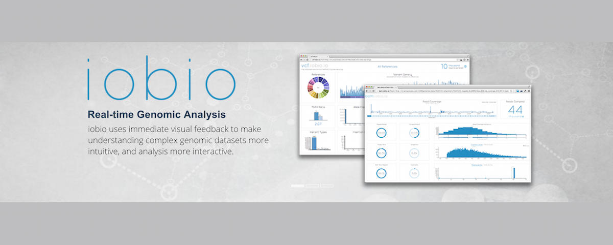
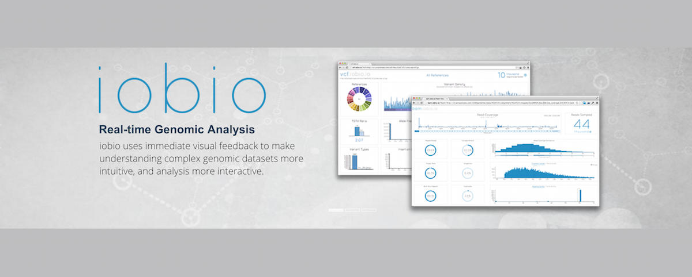

Gabor Marth’s computational genomics laboratory is at the USTAR Center for Genetic Discovery [link],
in the Department of Human Genetics [link], at the University of Utah. We develop software tools
for genomic data analysis using a combination of biological, statistical, and engineering approaches
to accurately detect inherited genetic variations and somatic tumor mutations; to understand
tumor evolution at the subclonal level; and web-based, highly visual, real-time interactive tools
for intuitive analysis of genomic big data.
Our recent projects include the development of the FreeBayes [link: arXiv, SpeedSeq paper in Nature Genetics]
genetic variant caller program, extensively tested in the recently completed 1000 Genomes
Project [link: most recent 1000GP pub in Nature]. We built the SubcloneSeeker tool
[link: SubcloneSeeker pub in Genome Biology] to reconstruct subclone evolution in cancer patients
from primary tumor to relapse. We are currently expanding this tool to understand subclone evolution i
n patients as they progress through multiple courses of chemotherapy. We are excited about our IOBIO
project [link: iobio.io] in which we developed a number of real-time analysis web apps for “at a glance”
inspection of large genomic sequence alignment and variant files (http://bam.iobio.io and http://vcf.iobio.io);
and for powerful, interactive, gene-focused disease variant analysis and prioritization (http://gene.iobio.io).
 
